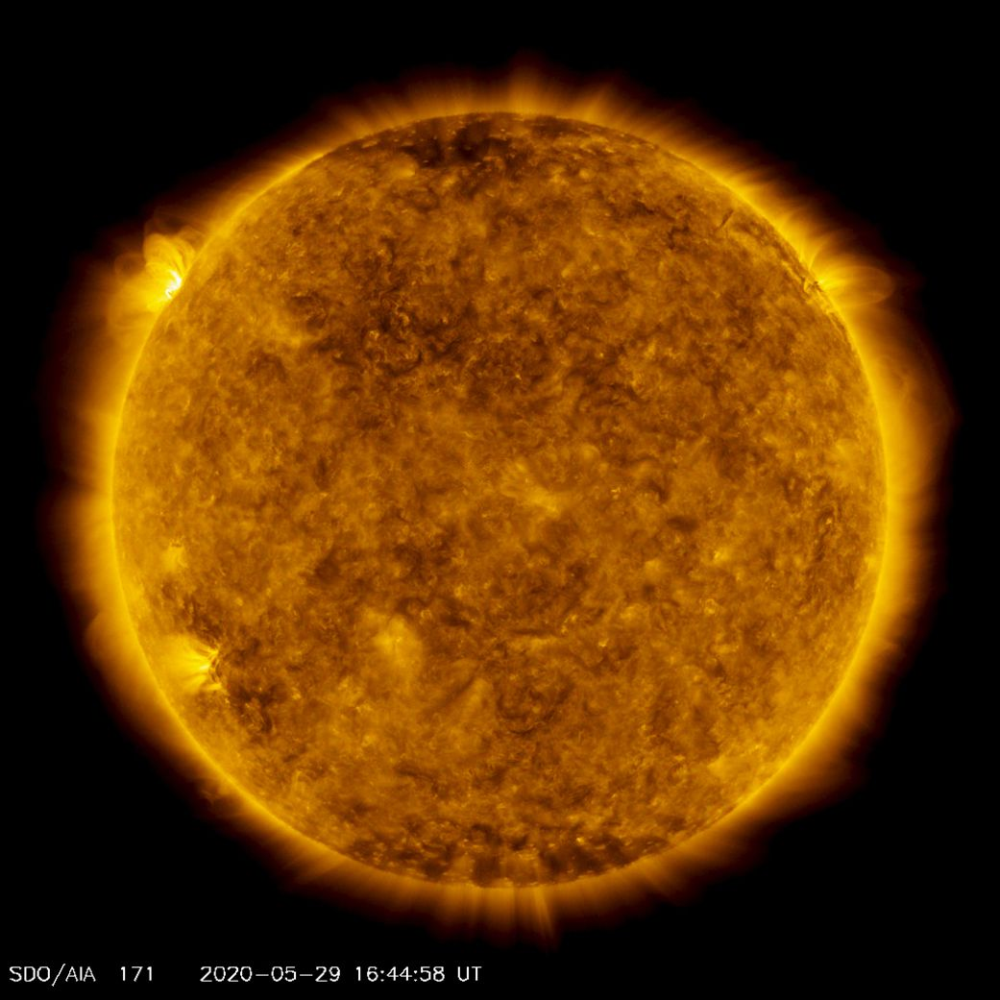
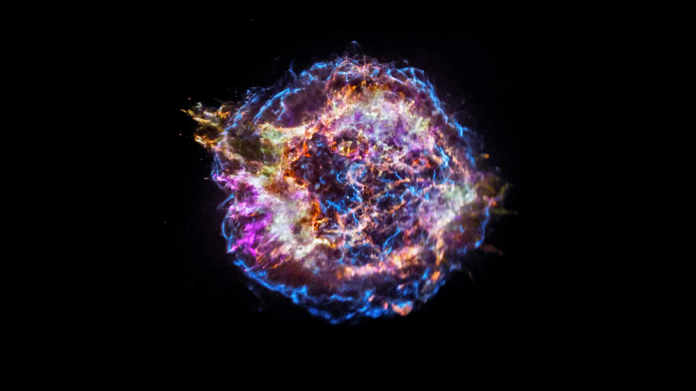
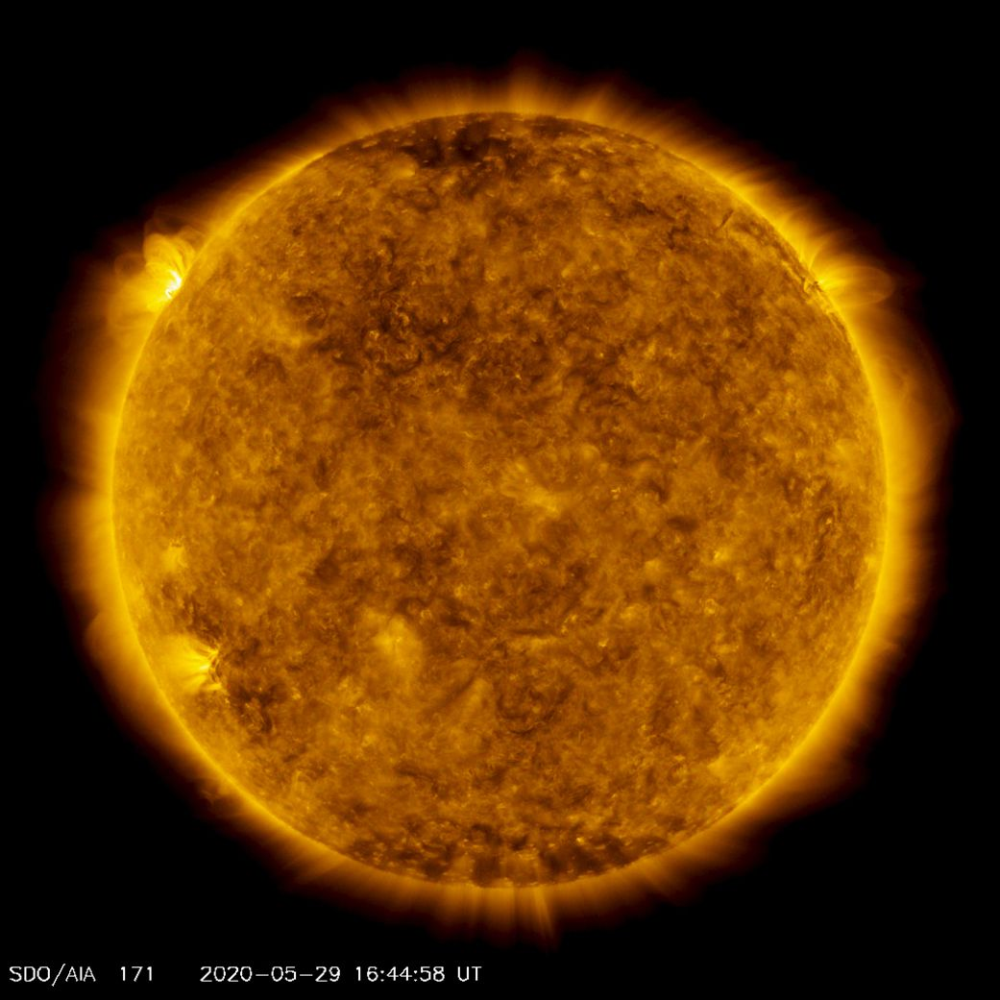
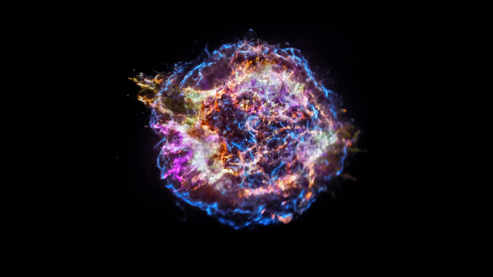

Stars
A star is an astronomical object comprising a luminous spheroid of plasma held together by self-gravity. The nearest star to Earth is the Sun. Many other stars are visible to the naked eye at night, but their immense distances from Earth make them appear as fixed points of light. The most prominent stars have been categorised into constellations and asterisms, and many of the brightest stars have proper names. Astronomers have assembled star catalogues that identify the known stars and provide standardized stellar designations. The observable universe contains an estimated 1022 to 1024 stars. Only about 4,000 of these stars are visible to the naked eye, all within the Milky Way galaxy.
Click to Read More
A star's life begins with the gravitational collapse of a gaseous nebula of material composed primarily of hydrogen, along with helium and trace amounts of heavier elements. Its total mass is the main factor determining its evolution and eventual fate. A star shines for most of its active life due to the thermonuclear fusion of hydrogen into helium in its core. This process releases energy that traverses the star's interior and radiates into outer space. At the end of a star's lifetime, its core becomes a stellar remnant: a white dwarf, a neutron star, or—if it is sufficiently massive—a black hole.
Stellar nucleosynthesis in stars or their remnants creates almost all naturally occurring chemical elements heavier than lithium. Stellar mass loss or supernova explosions return chemically enriched material to the interstellar medium. These elements are then recycled into new stars. Astronomers can determine stellar properties—including mass, age, metallicity (chemical composition), variability, distance, and motion through space—by carrying out observations of a star's apparent brightness, spectrum, and changes in its position in the sky over time.
Stars can form orbital systems with other astronomical objects, as in the case of planetary systems and star systems with two or more stars. When two such stars have a relatively close orbit, their gravitational interaction can significantly impact their evolution. Stars can form part of a much larger gravitationally bound structure, such as a star cluster or a galaxy.
You can read even more about stars on Wikipedia
 



Minimize

Moons
The Moon is Earth's only natural satellite. Its diameter is about one-quarter of Earth's (comparable to the width of Australia), making it the fifth largest satellite in the Solar System and the largest and most massive relative to its parent planet. It is larger than all known dwarf planets in the Solar System. The Moon is a planetary-mass object with a differentiated rocky body, making it a satellite planet under the geophysical definitions of the term. It lacks any significant atmosphere, hydrosphere, or magnetic field. Its surface gravity is about one-sixth of Earth's at 0.1654 g—Jupiter's moon Io is the only satellite in the Solar System known to have a higher surface gravity and density.
Click to Read More
The Moon orbits Earth at an average distance of 384,400 km (238,900 mi), or about 30 times Earth's diameter. Its gravitational influence is the main driver of Earth's tides and very slowly lengthens Earth's day. The Moon's orbit around Earth has a sidereal period of 27.3 days. During each synodic period of 29.5 days, the amount of visible surface illuminated by the Sun varies from none up to 100%, resulting in lunar phases that form the basis for the months of a lunar calendar. The Moon is tidally locked to Earth, which means that the length of a full rotation of the Moon on its own axis causes its same side (the near side) to always face Earth, and the somewhat longer lunar day is the same as the synodic period. However, 59% of the total lunar surface can be seen from Earth through cyclical shifts in perspective known as libration.
The most widely accepted origin explanation posits that the Moon formed 4.51 billion years ago, not long after Earth, out of the debris from a giant impact between the planet and a hypothesized Mars-sized body called Theia. It then receded to a wider orbit because of tidal interaction with the Earth. The near side of the Moon is marked by dark volcanic maria ("seas"), which fill the spaces between bright ancient crustal highlands and prominent impact craters. Most of the large impact basins and mare surfaces were in place by the end of the Imbrian period, some three billion years ago. The lunar surface is fairly non-reflective, with the reflectance of lunar soil being comparable to that of asphalt. However, due to its large angular diameter, the full moon is the brightest celestial object in the night sky. The Moon's apparent size is nearly the same as that of the Sun, allowing it to cover the Sun almost completely during a total solar eclipse.
Both the Moon's prominence in Earth's sky and its regular cycle of phases have provided cultural references and influences for human societies throughout history. Such influences can be found in language, calendar systems, art, and mythology. The first artificial object to reach the Moon was the Soviet Union's uncrewed Luna 2 spacecraft in 1959; this was followed by the first successful soft landing by Luna 9 in 1966. The only human lunar missions to date have been those of the United States' Apollo program, which landed twelve men on the surface between 1969 and 1972. These and later uncrewed missions returned lunar rocks that have been used to develop a detailed geological understanding of the Moon's origins, internal structure, and subsequent history. The Moon is the only celestial body visited by humans.
You can read even more about moons on Wikipedia
Minimize